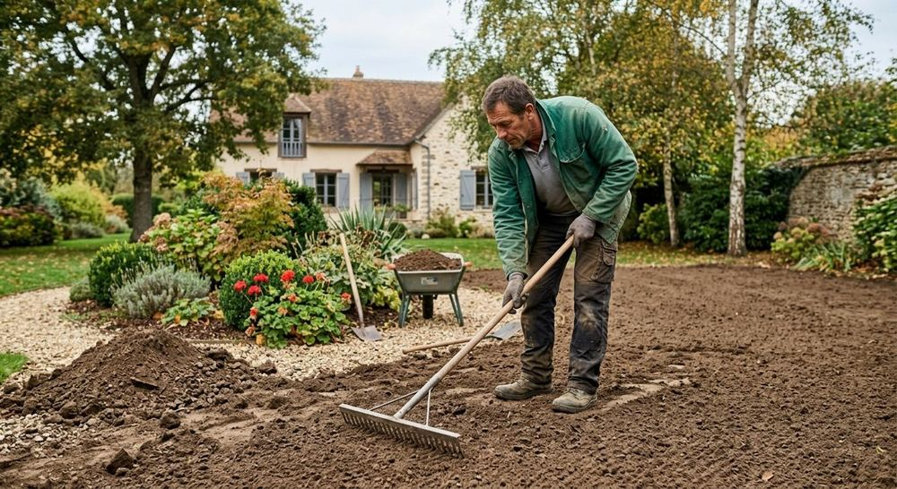
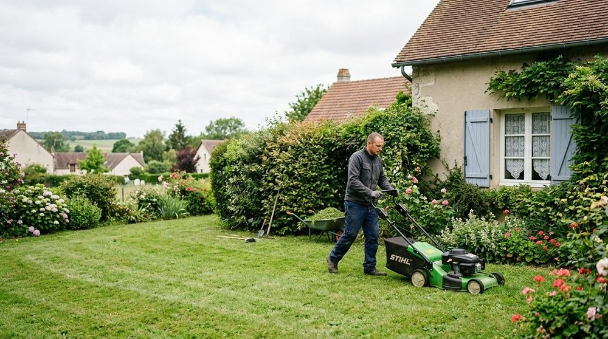
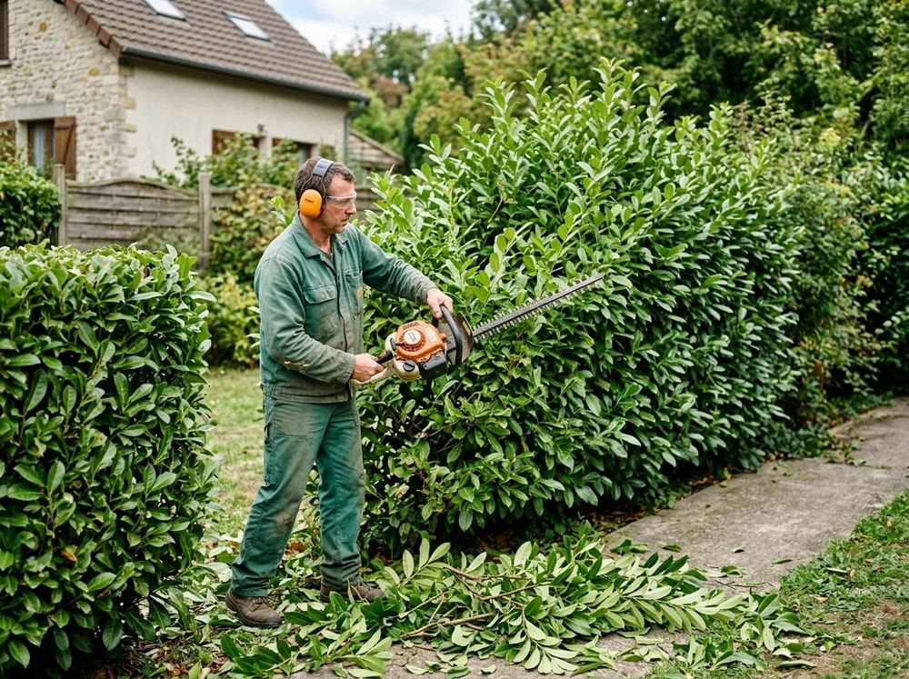

Création d'espaces verts
Pelouse, massifs, plantations : le jardin est conçu pour la maison, l'exposition et l'usage que vous en avez.
Prestations
Terrasses, allées, murets, plantations, tonte et taille : Artivert Lenaik intervient de la création du jardin jusqu'à son entretien.


Aménager
Pelouse, massifs, plantations : le jardin est conçu pour la maison, l'exposition et l'usage que vous en avez.

Un sol préparé avec soin donne des terrasses, des allées et des pelouses qui durent.
Entretenir
L'entretien suit le jardin au fil des saisons, avec les mêmes interlocuteurs que pour sa création.


Votre projet
Appelez directement ou décrivez votre jardin en quelques lignes.